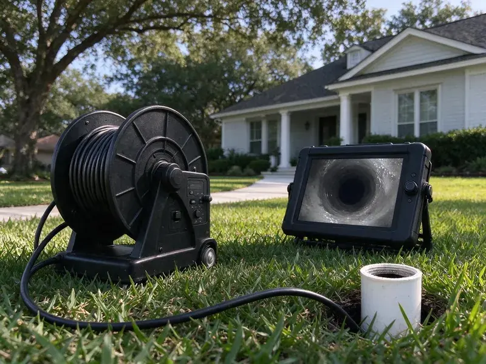

Sewer Line Replacement in Kansas City, KS
KRV Plumbing replaces sewer laterals across Kansas City, KS, from the cleanout at the house out to the city tap.
- No Surprise Line Items
- Camera Inspection Before Any Quote
- We Pull the Permits
- Inspected, Permitted Work

Licensed Sewer Replacement in Kansas City, KS
Ask for a camera inspection and a written estimate for each method that fits.
Sewer Line Replacement in Kansas City, KS
KRV Plumbing replaces sewer laterals for homes around Kansas City, KS. Slab leaks and cracked sewer lines are common results of shifting clay, especially after long dry spells followed by heavy rain. Old rigid pipe under settling ground cracks open at the joints, and tree roots follow the moisture right into those gaps. Most jobs follow the old path.
Our expertise includes:
- Full Lateral Replacement, House to Main
- Two-way cleanouts installed at the foundation
- Trenched installs on proper bedding at correct fall

Additional Drain Services Services in Kansas City, KS
From stubborn kitchen clogs to main sewer backups, our drain services in Kansas City, KS clear the line and keep it clear with camera-verified results.


Customers
Why Choose KRV Plumbing for Sewer Line Replacement in Kansas City, KS?
A sewer installed with the wrong fall will clog no matter what pipe you use. On open-trench work we check fall with a laser level twice, once while laying pipe and again before inspection. Bellies hold waste. We do not leave them.
- Yard Put Back, We backfill, compact and rake out the dig site before we leave.
- Local Ground Know-How, We have dug through the clay, rock and fill found around Kansas and price the job around it.
- Methods Side by Side, Trenchless and open-trench are priced together so you can compare.
Citywide Coverage
Each neighborhood in Kansas City has its own sewer story. Some have shallow laterals running under driveways, some have deep taps at the street, and some have cleanouts that were buried decades ago. The camera sorts it out. KRV Plumbing brings the right equipment for each.
Experienced Team
Our sewer crews have replaced laterals through clay, caliche, rock and old construction fill. They can hold fall on a long run, shore a deep trench and make a clean tap at the main. That takes years.
Safety-First Approach
Open trenches are fenced and covered at the end of each day. Steel plates or plywood go over any hole near a walkway, and caution tape marks the work area so nobody steps into an excavation at night. Kids get curious.
Trusted Certified Kansas City Plumbing Services Professionals
At KRV Plumbing, we are proud to offer certified plumbing services throughout Kansas City, KS. Those papers on the wall mean something. Our plumbers hold recognized industry credentials, and they follow strict safety and quality rules on every repair, installation and maintenance call we run.
Call Us Now PHCC Plumbing Contractor Recognition
PHCC Plumbing Contractor Recognition Better Business Bureau (BBB) Accreditation
Better Business Bureau (BBB) Accreditation Angi Certified Pro
Angi Certified Pro ISO 9001 Quality Management Certification
ISO 9001 Quality Management CertificationSewer Line Replacement Methods in Kansas City, KS
Commercial Sewer Line Replacement in Kansas City
Restaurants and strip centers cannot close for a week. Commercial jobs get scheduled around your hours, with the equipment staged early and the work often done overnight. Expect six inch pipe, sometimes larger. Grease and heavy flow change how we pick the material and set the cleanouts.

Sewer Permits and Code in Kansas City, KS
Sewer replacement nearly always needs a permit. We file it, schedule the inspection and meet the inspector on site, so you never have to take a morning off to stand in the yard. The inspector looks at pipe size, slope, bedding and cleanouts. Skipping the permit can come back to bite you at resale.
Replacing a Collapsed Sewer by Trench in Kansas City
Collapsed pipe cannot be burst or lined. A camera that dead-ends at broken clay or squashed fiber pipe means we have to dig, clean out the debris and replace that run. Being in the trench shows us what the surrounding soil is doing. Often there is a void or a root mat right at the failure point.
Emergency Sewer Replacement in Kansas City, KS
Sewage coming up a floor drain is an emergency. We answer the call, get a camera down the line, and tell you within the first visit whether the pipe has collapsed or just needs to be cleared for now. If it has collapsed, we start permit and locate requests that day. KRV Plumbing can often run a temporary bypass. That keeps one toilet and the kitchen sink usable while the dig gets scheduled.
Residential Sewer Replacement in Kansas City, KS
Most of our sewer work is single-family homes. Slab leaks and broken sewer laterals are common results of shifting clay, especially after long dry spells followed by heavy rain. The usual suspects are rooted clay joints, cast iron worn through at the bottom and sections that sank as the soil settled. Replacing the line stops sewage from backing up into the lowest drain in the house.
After-Hours Sewer Collapse Response in Kansas City
Raw sewage on a basement floor is a health problem. Our on-call tech can clear a partial blockage, scope the line and tell you if the house can safely use its drains overnight or if everything needs to stay off until the repair. Cleanup comes after the pipe is fixed. If drywall or carpet got wet, we can refer a restoration company.
Keeping a New Sewer Line Healthy in Kansas City
New pipe still needs a little care. Keep willows, silver maples and other thirsty trees well away from the sewer path, because even a good line can get stressed by a large root system pushing on it. Slab leaks and broken sewer laterals are common results of shifting clay, especially after long dry spells followed by heavy rain. Wipes do not break down. On older homes, a quick camera look every few years spots trouble at the tap before it backs up.

What Sewer Replacement Costs in Kansas City, KS
Four things set the price: length, depth, access and method. Open trench through an open lawn is usually the cheapest per foot, while bursting costs more per foot but can save thousands in concrete and landscaping repair. Hardscape flips the numbers. We write up every workable option with its own total after the camera run.
Local Sewer Pipe Replacement in Kansas City, KS
Our crews cover Kansas City and the surrounding towns for sewer replacement. With trucks already in the area, we can usually handle a backed-up line the same day and set the full replacement for the next open slot after permits and locates. Permits take a few days. Our office files it the day you approve the estimate.
Searching for sewer line replacement near you in Kansas City, KS? KRV Plumbing has crews and a camera truck working the area most days. That usually means a same-week camera inspection instead of waiting two or three weeks for a company coming from across the state. We know the neighborhoods.
KRV Plumbing at a Glance
- Licensed and insured plumbers serving Kansas City, KS
- Same-day appointments and 24/7 emergency response
- Clear written estimates, no hidden fees
- 4.9-star rated by 910+ Kansas customers
Kansas City Map
Kansas City Information
- Population
- 152,933
- Area codes
- 913/816/785
- Service area
- Kansas City and towns within a 40 mile drive
- Nearby
- Shawnee, Prairie Village, Lenexa, Leawood
Ground movement bends and cracks rigid sewer pipe, and offset joints in Kansas City, KS tend to get worse with each season. Slab leaks and broken sewer laterals are common results of shifting clay, especially after long dry spells followed by heavy rain.
Expert Services
Reach out to KRV Plumbing for honest, reliable plumbing from people who know the trade in Kansas City, KS.
Our Specialized Plumbing Services in Kansas City, KS
At KRV Plumbing, you get every kind of plumbing service from one company across Kansas City, KS. From leak detection to full system installs, our team works fast and charges fair prices on homes and commercial properties alike. Here are the core services we offer:


How a Sewer Line Replacement Goes in Kansas City, KS
A sewer replacement is real excavation, so we lay out each stage before we start.
Call for an Inspection
Call (316) 229-8459 and we set a time to run a camera. Tell us about any backups or odors.
Camera and Locate
We record the line from cleanout to main and mark breaks and depth on the lawn. You see the footage on the spot.
Options and Prices
You get written prices for trenchless and open-trench work. We explain the tradeoffs.
Frequently Asked Questions About Sewer Line Replacement in Kansas City
Most residential jobs in Kansas City, KS land somewhere between $4,000 and $25,000. Length, depth, method and what sits on top of the line, grass or concrete, account for nearly all of that spread. Pipe is a small share. We give you a written number after the camera inspection.
Open trench leaves a strip of disturbed soil along the line. We cut and roll sod where possible, compact the backfill in layers and rake it smooth, but grass takes a season to fill back in. Bursting means two holes.
Usually not for age or roots. Standard policies tend to exclude wear and tear, but some carriers sell a service line endorsement that does cover the lateral. Read your declarations page.
Clogs come back on a schedule when the pipe is the problem. If you need the line cleared every few months, especially in an older home, roots or a broken section are usually behind it. Dips in the lawn are a warning. Get a camera in first.
Both. PVC goes in trenched jobs because it glues up straight and holds grade on bedding, and HDPE goes in bursting jobs because it fuses into one flexible piece. Either beats clay.
Yes, in nearly every case. The local building department wants to see sewer work before it gets buried, and the permit is how they schedule that inspection. We file it for you.
Figure one to three days for a burst and three to five for a trench. Tight side yards, deep taps or rock can stretch a dig, and the permit and locate process adds a few days before anything starts. We give you dates up front.
The camera tells you. Collapse, open cracks, deep sags and big offsets mean a cleaning will not last. Light roots may just need cutting.
What Our Customers Say About Our Plumbing Experts

James P.
Our restaurant had a slow leak at the hand sink that was rotting the cabinet base. KRV Plumbing came in at six in the morning before prep, replaced the trap and both supply lines, and was packed up before my first cook clocked in.
Commercial Plumbing · Shawnee, KSKevin O.
Before buying our house I paid for a sewer camera inspection. KRV Plumbing found a belly in the line that held standing water about forty feet from the cleanout. We used the video to get the sellers to fix it before closing.
Sewer Camera Inspection · Kansas City, KS
Patricia H.
We had a slab leak that two other companies could not find. KRV Plumbing located it in under an hour with a listening device. They rerouted the line through the attic instead of breaking up the floor, so we kept our kitchen tile.
Slab Leak Repair · Kansas City, KS
Monica A.
Our water bill nearly doubled in one month with no change in how we used water. The tech checked the meter, heard the leak under the hallway with his equipment, and opened a hole about a foot square. Fixed the same day.
Slab Leak Repair · Overland Park, KSSofia M.
Two new toilets went in during one visit. The tech set them on new wax rings and swapped the old supply lines. He also noticed our bathroom faucet dripping and replaced the cartridge while he was there. No mess left behind.
Toilet Installation · Prairie Village, KS
Mark T.
The floor drain in our office break room backed up every few weeks. The plumber ran a cable, then put a camera down and found roots at a joint about thirty feet out. Seeing it on the screen made the decision easy.
Drain Cleaning · Leawood, KS